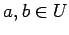
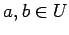
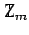
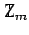

Inhalt Index DeskTop Bronstein

 Algebra und Diskrete Mathematik Klassische algebraische Strukturen Gruppen Untergruppen und direkte Produkte
Algebra und Diskrete Mathematik Klassische algebraische Strukturen Gruppen Untergruppen und direkte Produkte


Es sei eine Gruppe und  Ist U bezüglich
Ist U bezüglich  wieder eine Gruppe, so heißt eine Untergruppe von G.
wieder eine Gruppe, so heißt eine Untergruppe von G.
Eine nichtleere Teilmenge U einer Gruppe  ist genau dann Untergruppe von G, wenn für alle  auch
ist genau dann Untergruppe von G, wenn für alle  auch  und a-1 in U liegen (Untergruppenkriterium).
und a-1 in U liegen (Untergruppenkriterium).
| (5.98) |
Ist die Gruppenoperation eine Addition, so schreibt man statt der Potenzen ak als Abkürzung für die k-fache Verknüpfung von a mit sich selbst ganzzahlige Vielfache ka als Abkürzung für die k-fache Addition von a mit sich selbst, d.h.
| (5.99) |
Dabei ist <a> die kleinste Untergruppe von  die a enthält. Gilt für ein Element a aus
die a enthält. Gilt für ein Element a aus  so heißt G eine zyklische Gruppe.
so heißt G eine zyklische Gruppe.
Es gibt unendliche zyklische Gruppen, wie  bezüglich der Addition, und endliche zyklische Gruppen, wie die Restklassenaddition in der Menge  der Restklassen modulo m.
bezüglich der Addition, und endliche zyklische Gruppen, wie die Restklassenaddition in der Menge  der Restklassen modulo m.
| Beispiel |
|
Ist die Elementeanzahl einer endlichen Gruppe G eine Primzahl, so ist G stets zyklisch. |
| (5.100) |
von G Linksnebenklassen bzw. Rechtsnebenklassen von U in  Die Links- bzw. Rechtsnebenklassen bilden jeweils eine Zerlegung von
Die Links- bzw. Rechtsnebenklassen bilden jeweils eine Zerlegung von  .
.
Alle Links- oder Rechtsnebenklassen einer Untergruppe U in einer Gruppe G haben die gleiche Anzahl von Elementen, nämlich ord  . Daraus ergibt sich, daß die Anzahl der Linksnebenklassen gleich der Anzahl der Rechtsnebenklassen ist. Diese Zahl wird Index von U in G genannt. Aus den genannten Fakten ergibt sich der Satz von LAGRANGE (s. nächten Abschnitt).
. Daraus ergibt sich, daß die Anzahl der Linksnebenklassen gleich der Anzahl der Rechtsnebenklassen ist. Diese Zahl wird Index von U in G genannt. Aus den genannten Fakten ergibt sich der Satz von LAGRANGE (s. nächten Abschnitt).